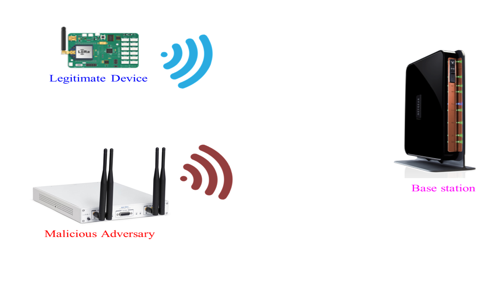

|
 |
|
|
| This project aims to study the security and privacy challenges associated with next-generation wireless networks. We study the unique security challenges imposed by the Internet of Things, where wireless devices have significantly lower power, compute and communication bandwidth compared to high-power adversaries. We develop a deep learning based wireless authentication solution that uses the imperfections of wireless radios to our advantage in uniquely identifying them. We also develop a suite of solutions in ensuring threat and anomaly detection in the presence of high-mobility wireless radios, such as in robotic swarms. |
- Exploring the Needs of Users for Supporting Privacy-protective Behavior in Smart Homes, Haojian Jin, Boyuan Guo, Rituparna Roychoudhury, Yaxing Yao, Swarun Kumar, Yuvraj Agarwal and Jason Hong, CHI 2022 [PAPER] [WEBSITE]
- Lean Privacy Review: Collecting Users' Privacy Concerns of Data Practices at a Low Cost, Haojian Jin, Hong Shen, Mayank Jain, Swarun Kumar, and Jason Hong, TOCHI 2021 [PAPER] [WEBSITE]
- Poster - NoFaceContact: Stop Touching Your Face with NFC, Junbo Zhang and Swarun Kumar, MobiSys 2020 [PAPER] [WEBSITE]
- A Deep Learning Approach to IoT Authentication , Rajshekhar Das, Akshay Gadre, Shanghang Zhang, Swarun Kumar and Jose Moura, ICC 2018 [PAPER] [WEBSITE]
- Guaranteeing Spoof-Resilient Multi-Robot Networks, Stephanie Gil (Co-primary), Swarun Kumar (Co-primary), Mark Mazumder, Dina Katabi and Daniela Rus, RSS 2015 [PAPER]
- PI: Swarun Kumar
- Students: Junbo Zhang, Haojian Jin and Akshay Gadre
- Collaborators: Prof. Soummya Kar, Prof. Osman Yağan and Prof. José Moura